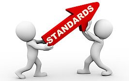

In our world, standards act as the bedrock of civilization. They function as the threads that hold society together, ensuring its smooth operation. It is in our languages, buildings, mannerisms, nature, and even code. Without standards, chaos reigns supreme.
In English, we have grammar standards that allow us to effectively and efficiently communicate. Because coding is another form of language, there are general rules that help with clarity. Disregarding grammar or coding rules hinders our ability to understand each other. Some may argue that specific coding standards appear trivial, such as the number of spaces for indentation or the placement of closing curly braces. However, beneath these seemingly minute details lies significant benefits.
In my Software Engineering class, we practiced using a stricter standard using ESLint with IntelliJ. At first, I found this change funny as I saw all my code light up with red error markings, indicating that the code was not up to standards. I spent a good five minutes fixing my mistakes, but the end result was magnificent. Not only did it look pretty, but the standardized text made it clean, clear, and easy to read. Managing code was easier after this revelation and made me more conscious about what I write. Rather than just putting a bunch of code on my screen, having a strict standard that yells at you at the sight of a mistake also aids in the thought process. This is extra helpful when I am on limited time trying to finish an assignment.
When I look back at my first-ever big coding project, something sticks out. My coding standard was terrible! Inconsistent spacing, unneeded empty lines, and, worst of all, bad variable names. It was challenging to follow at times. Similar to English, having inadequate coding standards is like having bad sentences, lacking punctuation and nonsensical words thrown in. Tools like IntelliJ and ESLint were life-changing and made me wish I had access to them earlier. From experience, having strict standards would have helped me learn better and faster. Instead of spending hours to find and debug a single line of code, it could have easily prompted me what the error was, and I could have fixed it. However, that is not to say that there are no good lessons to be had when struggling early in the learning process.
Although not everyone agrees on a single standard, having them is better than nothing. While adjusting to a new way of coding was challenging, this shift has changed the way I think, and the end product is more robust and cleaner to boot. Just as grammar rules make language coherent, coding standards make software comprehensible.